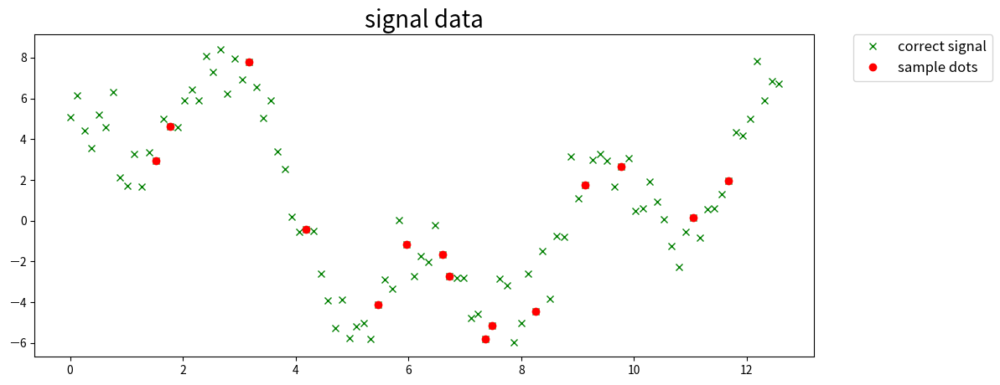

雑なメモ置き場
About
雑なメモ置き場
メモ書きなので間違っていることもあります(保険)
Categories
All
(16)
GitLab
(1)
Python
(1)
Rust
(1)
SQL
(1)
ahc
(3)
image
(2)
ml
(8)
notebook
(3)
wasm
(1)
音声
(1)
Python でスキャン画像の回転補正をやってみる
Python
image
画像の回転補正をやってみる。
2025 年 03 月 25 日
時系列データの lag, step の作成操作
ml
ML わからんので手始めに時系列データの予測をやってみようとしたところ、 lag, step の作成に手こずったのでメモを残す。
DataFrame の MultiIndex がまだまだわからん。
2025 年 02 月 05 日
Rust WebAssembly + React (Vite) で作成したサイトを GitLab Pages へデプロイ
GitLab
Rust
wasm
Rust のプログラムを WebAssembly にコンパイルしたものを使う Web サイトを GitLab Pages にデプロイしたので、その時のメモ。
2024 年 09 月 17 日
データ解析のための統計モデリング入門 3章のポアソン回帰
ml
データ解析のための統計モデリング入門 3章のポアソン回帰をざっとやってみる
2024 年 08 月 16 日
ガウス過程と機械学習 3章 ガウス過程回帰のパラメータ推定
ml
前回 からの続き
2024 年 08 月 16 日

ガウス過程と機械学習 3章 ガウス過程回帰
ml
notebook
『ガウス過程と機械学習』 (講談社) の3 章を読んだので、ガウス過程回帰の部分を実際にコードにしてみる。
2024 年 08 月 14 日
SQLコンテストの問題 4 を解く(第 1〜10 回)
SQL
SQL の Window 関数の練習のため SQL コンテスト の問題4 を解いていく。
2024 年 06 月 17 日
AHC028 解説放送メモ
ahc
解説放送みたメモ
2024 年 06 月 07 日
音声信号の “delta” という特徴量
音声
ml
音声信号に
delta
という特徴量があるらしい。 Practical Cryptography
2024 年 05 月 20 日
numpy, pandas.DataFrame で多数決をとる
ml
多数決を取ったメモ。 今回は行ごとの最頻値を求める。
2024 年 05 月 12 日
PyTorch 学習結果の再現性確保
ml
Pytorch Lightning で学習したとき、
seed_everything
で乱数固定すれば、同じ学習結果が得られると思っていたが実際にはそうでなかった。
2024 年 05 月 11 日
BCEWithLogitsLoss の確認
ml
BCEWithLogitsLoss はマルチラベル分類のロスに使えることを知った
2024 年 05 月 09 日
画像グリッド描画サンプル
notebook
image
複数枚の画像をグリッド描画するサンプルコードです。
torchvision
の
make_grid
を使って描画します。 make_grid
2024 年 05 月 04 日
AHC032 解説放送メモ
ahc
解説放送みたメモ
2024 年 05 月 03 日
chokudai search template
ahc
chokudai search の練習をしたのでメモ。
2024 年 05 月 01 日
gpu check
notebook
import
torch
torch.cuda.is_available()
True
2024 年 05 月 01 日
No matching items
Copyright
Copyright tamuraup. 2024. All Rights Reserved